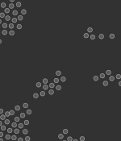

Agent Based Modelling (ABM)

1. ABM
If we want to model a given scenario we can employ a mathematical structure to illustrate it.However, these models treat the population as a homogeneous entity- they will all act in the same way (Alto, 2020). This is where ABM's are highly useful, as they can be modelled to be heterogenous. Agents can be modelled individually, and it's this diversity among agents that can be observed as they interact with other agents and with their environment. In order to create an ABM they need to have the following three main elements (Macal and North 2010).
- Set number of agents created
- An environment for the agents to interact with
- a set of relations and methods for the agents to allow interaction
2. Link to GitHub Repository
An Agent Based Model was created as part of this module at the University of Leeds. Please click the following link
GitHub Repository and it will take you to my GitHub homepage. The repository for this project is named "Programming for Social Science" Here, the code needed to run the Agent Based Model is found under the Model.py and AF.py files. Please also refer to the READ.me file for more information on how to run the code and the files that are in the repository.
3. Bibliography
- Alto, V., 2020. Understanding Agent Based Model With Python. Data Science Chalk Talk [Accessed 23 October 2020]
- Macal, C. and North, M., 2010. Tutorial on agent-based modelling and simulation. Journal of Simulation, 4(3), pp.151-162.